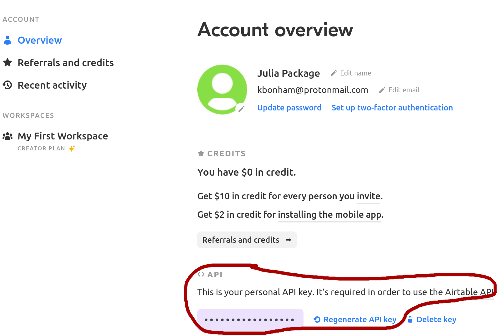

Airtable
An (unofficial) API for interacting with the Airtable API.
Airtable.CredentialAirtable.getAirtable.patchAirtable.postAirtable.putAirtable.queryAirtable.request
Using this package
This package is a very thin wrapper around the Airtable REST API, using HTTP.jl to do the hard stuff. No types or methods are exported, mostly because I didn't want to think too hard about naming them.
This documentation should be used in close conjuntion with the airtable API documentation, which is generated automatically for you using your actual tables (see below).
Most functions require 4 parts:
- a
Credential, which stores your API key - a Base ID
- a
tablename- which refers to the specific table from your base - an API query, in the form of keyword arguments
API key
To obtain your API key, go to your account settings page and click on the "generate API key" button. If you previously made a key, you can regenerate it, or just copy the one that's there.

You can then create an Airtable.Credential using that key as a string, or set it as an environmental variable (AIRTABLE_KEY by default).
Airtable.Credential — Type Credential(; api_key)A credential object for Airtable. If the apikey or apitoken are not provided, they will be read from the AIRTABLE_KEY environment variable. Go to Airtable account settings to aquire your credentials.
# after running `export AIRTABLE_KEY=<api key>` in the shell
julia> key = Airtable.Credential()
Airtable.Credential(<secrets>)Base ID
Open your airtable base, click the help button in the upper right, and then click "API documentation". Airtable generates documentation for your sepecific base - near the top you should see a sentence like the follwing, with a different alphanumeric sequence for your base:
The ID of this base is appphImnhJO8AXmmo
It will also appear in the url of the base documentation. For example, the Test base for this repo has the url https://airtable.com/appphImnhJO8AXmmo/api/docs.
Tablename
Within each base, you may have multiple tables. The tablename argument in the following functions is just a string with the table name, eg "Table 1".
API Query
Use keyword arguments to add commponents to the API request body. For example, if you want a GET request to only contain the Name field, you could include ; fields=["Name"] keyword argument to the Airtable.get function.
Interface
The primary function is Airtable.request, which contains all of the components for building an API query and parses the returned data with JSON3.jl.
The following examples use this airtable base, which has the ID "appphImnhJO8AXmmo", and the API key described above. To run this code, you will need to substitute the API key and ID from your own base. These examples only scratch the surface - much more information is available in the API documentation for your own base.
Airtable.request — FunctionAirtable.request(method::AbstractString, cred::Credential, baseid::AbstractString; query_kwargs...)Make a request to the Airtable API.
Required arguments:
method: one of "GET", "PUT", "POST", or "PATCH",cred: anAirtable.Credentialcontaining your API keybaseid: the endpoint of your Airtable base. See https://airtable.com/api for detailstablename: The name of the table (view) for the query
Query parameters are in the form of keyword arguments, eg filterByFormla = "NOT({Name} = '')", maxRecords=2. See Airtable API reference for more information.
Retrieve records
julia> key=Airtable.Credential();
julia> req1 = Airtable.request("GET", key, "appphImnhJO8AXmmo", "Table 1"; maxRecords=2)
JSON3.Object{Base.CodeUnits{UInt8, String}, Vector{UInt64}} with 1 entry:
:records => JSON3.Object[{…
julia> req1.records
2-element JSON3.Array{JSON3.Object, Base.CodeUnits{UInt8, String}, SubArray{UInt64, 1, Vector{UInt64}, Tuple{UnitRange{Int64}}, true}}:
{
"id": "recMc1HOSIxQPJyyc",
"fields": {
"Name": "Record 1",
"Notes": "Some notes",
"Status": "Todo"
},
"createdTime": "2020-10-16T21:04:11.000Z"
}
{
"id": "recMwT4P4tKlSLJoH",
"fields": {
"Name": "Record 2",
"Notes": "Other notes",
"Status": "In progress"
},
"createdTime": "2020-10-16T21:04:11.000Z"
}
julia> req2 = Airtable.request("GET", key, "appphImnhJO8AXmmo", "Table 1"; filterByFormula="Status = 'Done'")
JSON3.Object{Base.CodeUnits{UInt8, String}, Vector{UInt64}} with 1 entry:
:records => JSON3.Object[{…
julia> req2.records
1-element JSON3.Array{JSON3.Object, Base.CodeUnits{UInt8, String}, SubArray{UInt64, 1, Vector{UInt64}, Tuple{UnitRange{Int64}}, true}}:
{
"id": "recSStgr3yJnQc2Wg",
"fields": {
"Name": "Record 3 ",
"Status": "Done"
},
"createdTime": "2020-10-16T21:04:11.000Z"
}Retrieving lots of records
The airtable API will only return 100 records per request[1], and only allows 5 requests/sec. To facilitate retrieving lots of records, You can use the Airtable.query function.
Airtable.query — FunctionAirtable.query(cred::Credential, baseid::AbstractString, tablename; query_kwargs...)Shorthand for a "GET" request that handles continuation and rate-limiting.
The Airtable API will return a maximum of 100 records per requests, and only allows 5 requests / sec. This function uses the offset field returned as part of a requst that does not contain all possible records to make additional requests after pausing 0.21 seconds in between.
Required arguments:
cred: anAirtable.Credentialcontaining your API keybaseid: the endpoint of your Airtable base. See https://airtable.com/api for detailstablename: the name of the table in your base (eg"Table 1")
Query parameters are in the form of keyword arguments, eg filterByFormla = "NOT({Name} = '')", maxRecords=2. See Airtable API reference for more information.
Add/Update Records
I haven't actually figured this out yet 🤔. If you want to help, let me know!
Other functions
Here are some shorthands for GET, POST, PATCH, and PUT.
Airtable.get — FunctionAirtable.get(cred::Credential, baseid::AbstractString, tablename; query_kwargs...)Shorthand for Airtable.request("GET", cred, baseid, tablename; query_kwargs)
Airtable.post — FunctionAirtable.post(cred::Credential, baseid::AbstractString, tablename; query_kwargs...)Shorthand for Airtable.request("POST", cred, baseid, tablename; query_kwargs)
Airtable.patch — FunctionAirtable.patch(cred::Credential, baseid::AbstractString, tablename; query_kwargs...)Shorthand for Airtable.request("PATCH", cred, baseid, tablename; query_kwargs)
Airtable.put — FunctionAirtable.put(cred::Credential, baseid::AbstractString, tablename; query_kwargs...)Shorthand for Airtable.request("PUT", cred, baseid, tablename; query_kwargs)
- 1This is the default, you can change this with the
pageSizeparameter, but 100 is the maximum.